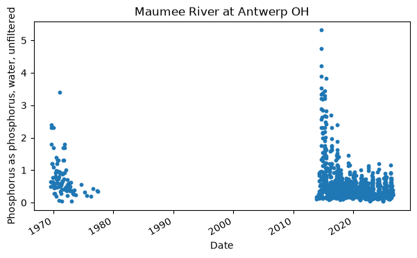
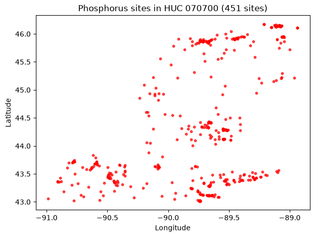
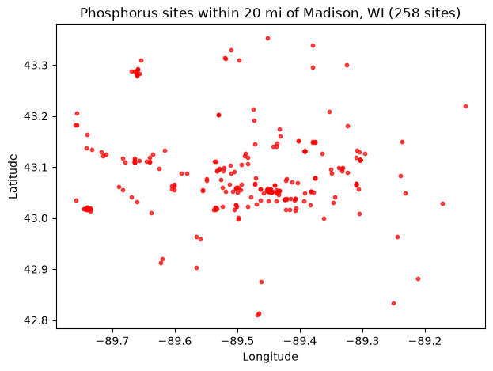
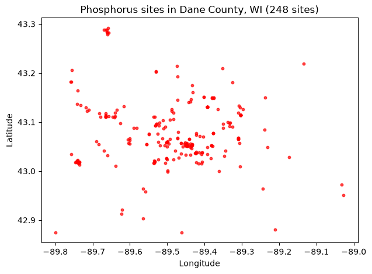
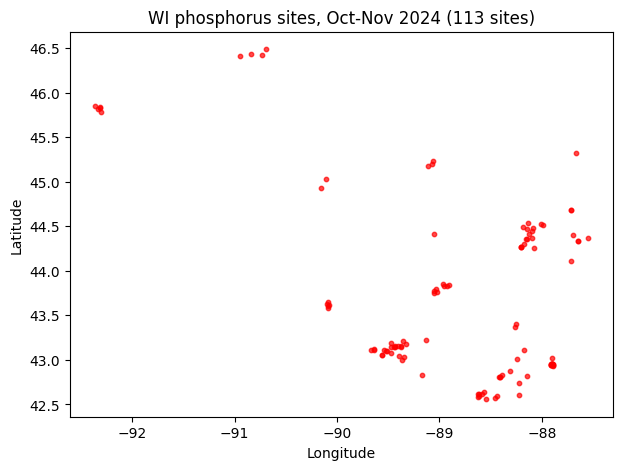

Discrete water-quality samples: get_samples
As USGS retires the legacy NWIS discrete water-quality services, the new Water Data for the Nation samples service takes their place. In Python it is exposed through three functions in dataretrieval.waterdata:
get_samples— retrieve discrete water-quality results (or, withservice=, the matching locations, activities, projects, or organizations).get_samples_summary— summarize what data a single site has.get_codes— list the allowable values for the categorical query arguments.
We’ll cover retrieving data from a known site, using geographic filters, and discovering what data are available. The interactive web UI is at https://waterdata.usgs.gov/download-samples/ and the API docs are at https://api.waterdata.usgs.gov/samples-data/docs.
Column names: unlike the OGC
get_daily/get_monitoring_locationsfunctions, the samples service uses WQX3-style names such asLocation_Latitude,Activity_StartDateTime, andResult_Measure.
[1]:
import matplotlib.pyplot as plt
import pandas as pd
from dataretrieval import waterdata
from dataretrieval.waterdata import PROFILE_LOOKUP
%matplotlib inline
plt.rcParams["figure.figsize"] = (7, 4)
def map_sites(df, title=""):
"""Static scatter plot of sample-site locations. Use folium for interactive."""
lon = pd.to_numeric(df["Location_Longitude"], errors="coerce")
lat = pd.to_numeric(df["Location_Latitude"], errors="coerce")
fig, ax = plt.subplots(figsize=(7, 5))
ax.scatter(lon, lat, s=10, color="red", alpha=0.7)
ax.set_xlabel("Longitude")
ax.set_ylabel("Latitude")
ax.set_title(f"{title} ({len(df)} sites)")
plt.show()
Retrieving data from a known site
Given a USGS site, get_samples_summary reports what discrete-sample data are available there — one row per (characteristic group, characteristic, user-supplied characteristic) with result and activity counts.
[2]:
site = "USGS-04183500"
data_at_site, _ = waterdata.get_samples_summary(monitoringLocationIdentifier=site)
data_at_site.sort_values("resultCount", ascending=False).head(10)
[2]:
| monitoringLocationIdentifier | characteristicGroup | characteristic | characteristicUserSupplied | resultCount | activityCount | firstActivity | mostRecentActivity | |
|---|---|---|---|---|---|---|---|---|
| 92 | USGS-04183500 | Physical | Stream flow, instantaneous | Discharge, instantaneous | 2497 | 1250 | 1971-10-05 | 2026-06-02 |
| 87 | USGS-04183500 | Physical | Height, gage | Gage height, above datum | 2389 | 1196 | 2013-10-23 | 2026-06-02 |
| 75 | USGS-04183500 | Nutrient | Phosphorus | Phosphorus as phosphorus, water, unfiltered | 1285 | 1285 | 1969-07-30 | 2026-05-11 |
| 69 | USGS-04183500 | Nutrient | Organic Nitrogen | Organic nitrogen as nitrogen, water, unfiltered | 1279 | 1279 | 1969-07-30 | 2026-05-11 |
| 54 | USGS-04183500 | Nutrient | Ammonia and ammonium | Total ammonia (NH4+ and NH3) as ammonium, wate... | 1223 | 1223 | 1971-10-05 | 2026-05-11 |
| 56 | USGS-04183500 | Nutrient | Ammonia and ammonium | Total ammonia (NH4+ and NH3) as nitrogen, wate... | 1223 | 1223 | 1971-10-05 | 2026-05-11 |
| 70 | USGS-04183500 | Nutrient | Orthophosphate | Orthophosphate as orthophosphate, water, filtered | 1192 | 1192 | 2013-10-23 | 2026-05-11 |
| 71 | USGS-04183500 | Nutrient | Orthophosphate | Orthophosphate as phosphorus, water, filtered | 1192 | 1192 | 2013-10-23 | 2026-05-11 |
| 58 | USGS-04183500 | Nutrient | Inorganic nitrogen (nitrate and nitrite) | Nitrate plus nitrite as nitrogen, water, filtered | 1192 | 1192 | 2013-10-23 | 2026-05-11 |
| 60 | USGS-04183500 | Nutrient | Kjeldahl nitrogen | Total ammonia (NH4+ and NH3) plus organic nitr... | 1191 | 1191 | 2013-10-23 | 2026-05-11 |
Note the characteristicUserSupplied column: asking for a bare characteristic like Phosphorus would return both filtered and unfiltered values mixed together. characteristicUserSupplied is a very specific descriptor (similar to a long-form USGS parameter code) that lets you isolate exactly the constituent you want. To pull the underlying data, use get_samples:
[3]:
user_char = "Phosphorus as phosphorus, water, unfiltered"
phos_data, _ = waterdata.get_samples(
monitoringLocationIdentifier=site,
characteristicUserSupplied=user_char,
)
print(f"default ('fullphyschem') profile -> {phos_data.shape[1]} columns")
default ('fullphyschem') profile -> 187 columns
The default profile (fullphyschem, the “Full physical chemical” profile) is comprehensive, hence the very wide table. For plotting we usually only need a few columns, so ask for the narrow profile instead:
[4]:
phos_narrow, _ = waterdata.get_samples(
monitoringLocationIdentifier=site,
characteristicUserSupplied=user_char,
profile="narrow",
)
print(f"'narrow' profile -> {phos_narrow.shape[1]} columns")
phos_narrow[["Activity_StartDateTime", "Result_Measure", "Result_MeasureUnit"]].head()
'narrow' profile -> 65 columns
[4]:
| Activity_StartDateTime | Result_Measure | Result_MeasureUnit | |
|---|---|---|---|
| 0 | 1969-07-30 18:30:00+00:00 | 0.65 | mg/L |
| 1 | 1969-08-06 16:50:00+00:00 | 0.49 | mg/L |
| 2 | 1969-08-20 15:15:00+00:00 | 1.80 | mg/L |
| 3 | 1969-09-03 17:37:00+00:00 | 2.30 | mg/L |
| 4 | 1969-09-18 16:40:00+00:00 | 2.40 | mg/L |
[5]:
x = pd.to_datetime(phos_narrow["Activity_StartDateTime"], errors="coerce")
y = pd.to_numeric(phos_narrow["Result_Measure"], errors="coerce")
fig, ax = plt.subplots(figsize=(7, 4))
ax.scatter(x, y, s=10)
ax.set_xlabel("Date")
ax.set_ylabel(user_char, wrap=True)
ax.set_title(phos_narrow["Location_Name"].iloc[0])
fig.autofmt_xdate()
plt.show()

Return data types
Two arguments control what comes back: service defines the kind of data and profile defines which columns of that kind are returned. The valid combinations are published in PROFILE_LOOKUP:
[6]:
PROFILE_LOOKUP
[6]:
{'activities': ['sampact', 'actmetric', 'actgroup', 'count'],
'locations': ['site', 'count'],
'organizations': ['organization', 'count'],
'projects': ['project', 'projectmonitoringlocationweight'],
'results': ['fullphyschem',
'basicphyschem',
'fullbio',
'basicbio',
'narrow',
'resultdetectionquantitationlimit',
'labsampleprep',
'count']}
Geographic filters
Often you don’t know a site number but you do have an area of interest. Below we keep the queries lightweight by setting service="locations" and profile="site" (so we get where data exists, not the result values themselves) and filter on our phosphorus characteristic.
Bounding box
A bounding box is [west, south, east, north] (longitudes then latitudes):
[7]:
bbox = [-90.8, 44.2, -89.9, 45.0]
bbox_sites, _ = waterdata.get_samples(
boundingBox=bbox,
characteristicUserSupplied=user_char,
service="locations",
profile="site",
)
map_sites(bbox_sites, "Phosphorus sites in bounding box")
---------------------------------------------------------------------------
ReadTimeout Traceback (most recent call last)
File /opt/hostedtoolcache/Python/3.13.13/x64/lib/python3.13/site-packages/httpx/_transports/default.py:101, in map_httpcore_exceptions()
100 try:
--> 101 yield
102 except Exception as exc:
File /opt/hostedtoolcache/Python/3.13.13/x64/lib/python3.13/site-packages/httpx/_transports/default.py:250, in HTTPTransport.handle_request(self, request)
249 with map_httpcore_exceptions():
--> 250 resp = self._pool.handle_request(req)
252 assert isinstance(resp.stream, typing.Iterable)
File /opt/hostedtoolcache/Python/3.13.13/x64/lib/python3.13/site-packages/httpcore/_sync/connection_pool.py:256, in ConnectionPool.handle_request(self, request)
255 self._close_connections(closing)
--> 256 raise exc from None
258 # Return the response. Note that in this case we still have to manage
259 # the point at which the response is closed.
File /opt/hostedtoolcache/Python/3.13.13/x64/lib/python3.13/site-packages/httpcore/_sync/connection_pool.py:236, in ConnectionPool.handle_request(self, request)
234 try:
235 # Send the request on the assigned connection.
--> 236 response = connection.handle_request(
237 pool_request.request
238 )
239 except ConnectionNotAvailable:
240 # In some cases a connection may initially be available to
241 # handle a request, but then become unavailable.
242 #
243 # In this case we clear the connection and try again.
File /opt/hostedtoolcache/Python/3.13.13/x64/lib/python3.13/site-packages/httpcore/_sync/connection.py:103, in HTTPConnection.handle_request(self, request)
101 raise exc
--> 103 return self._connection.handle_request(request)
File /opt/hostedtoolcache/Python/3.13.13/x64/lib/python3.13/site-packages/httpcore/_sync/http11.py:136, in HTTP11Connection.handle_request(self, request)
135 self._response_closed()
--> 136 raise exc
File /opt/hostedtoolcache/Python/3.13.13/x64/lib/python3.13/site-packages/httpcore/_sync/http11.py:106, in HTTP11Connection.handle_request(self, request)
97 with Trace(
98 "receive_response_headers", logger, request, kwargs
99 ) as trace:
100 (
101 http_version,
102 status,
103 reason_phrase,
104 headers,
105 trailing_data,
--> 106 ) = self._receive_response_headers(**kwargs)
107 trace.return_value = (
108 http_version,
109 status,
110 reason_phrase,
111 headers,
112 )
File /opt/hostedtoolcache/Python/3.13.13/x64/lib/python3.13/site-packages/httpcore/_sync/http11.py:177, in HTTP11Connection._receive_response_headers(self, request)
176 while True:
--> 177 event = self._receive_event(timeout=timeout)
178 if isinstance(event, h11.Response):
File /opt/hostedtoolcache/Python/3.13.13/x64/lib/python3.13/site-packages/httpcore/_sync/http11.py:217, in HTTP11Connection._receive_event(self, timeout)
216 if event is h11.NEED_DATA:
--> 217 data = self._network_stream.read(
218 self.READ_NUM_BYTES, timeout=timeout
219 )
221 # If we feed this case through h11 we'll raise an exception like:
222 #
223 # httpcore.RemoteProtocolError: can't handle event type
(...) 227 # perspective. Instead we handle this case distinctly and treat
228 # it as a ConnectError.
File /opt/hostedtoolcache/Python/3.13.13/x64/lib/python3.13/site-packages/httpcore/_backends/sync.py:126, in SyncStream.read(self, max_bytes, timeout)
125 exc_map: ExceptionMapping = {socket.timeout: ReadTimeout, OSError: ReadError}
--> 126 with map_exceptions(exc_map):
127 self._sock.settimeout(timeout)
File /opt/hostedtoolcache/Python/3.13.13/x64/lib/python3.13/contextlib.py:162, in _GeneratorContextManager.__exit__(self, typ, value, traceback)
161 try:
--> 162 self.gen.throw(value)
163 except StopIteration as exc:
164 # Suppress StopIteration *unless* it's the same exception that
165 # was passed to throw(). This prevents a StopIteration
166 # raised inside the "with" statement from being suppressed.
File /opt/hostedtoolcache/Python/3.13.13/x64/lib/python3.13/site-packages/httpcore/_exceptions.py:14, in map_exceptions(map)
13 if isinstance(exc, from_exc):
---> 14 raise to_exc(exc) from exc
15 raise
ReadTimeout: The read operation timed out
The above exception was the direct cause of the following exception:
ReadTimeout Traceback (most recent call last)
File /opt/hostedtoolcache/Python/3.13.13/x64/lib/python3.13/site-packages/dataretrieval/utils.py:305, in _get(url, **kwargs)
304 try:
--> 305 return httpx.get(url, **kwargs)
306 except httpx.TransportError as exc:
File /opt/hostedtoolcache/Python/3.13.13/x64/lib/python3.13/site-packages/httpx/_api.py:195, in get(url, params, headers, cookies, auth, proxy, follow_redirects, verify, timeout, trust_env)
187 """
188 Sends a `GET` request.
189
(...) 193 on this function, as `GET` requests should not include a request body.
194 """
--> 195 return request(
196 "GET",
197 url,
198 params=params,
199 headers=headers,
200 cookies=cookies,
201 auth=auth,
202 proxy=proxy,
203 follow_redirects=follow_redirects,
204 verify=verify,
205 timeout=timeout,
206 trust_env=trust_env,
207 )
File /opt/hostedtoolcache/Python/3.13.13/x64/lib/python3.13/site-packages/httpx/_api.py:109, in request(method, url, params, content, data, files, json, headers, cookies, auth, proxy, timeout, follow_redirects, verify, trust_env)
102 with Client(
103 cookies=cookies,
104 proxy=proxy,
(...) 107 trust_env=trust_env,
108 ) as client:
--> 109 return client.request(
110 method=method,
111 url=url,
112 content=content,
113 data=data,
114 files=files,
115 json=json,
116 params=params,
117 headers=headers,
118 auth=auth,
119 follow_redirects=follow_redirects,
120 )
File /opt/hostedtoolcache/Python/3.13.13/x64/lib/python3.13/site-packages/httpx/_client.py:825, in Client.request(self, method, url, content, data, files, json, params, headers, cookies, auth, follow_redirects, timeout, extensions)
812 request = self.build_request(
813 method=method,
814 url=url,
(...) 823 extensions=extensions,
824 )
--> 825 return self.send(request, auth=auth, follow_redirects=follow_redirects)
File /opt/hostedtoolcache/Python/3.13.13/x64/lib/python3.13/site-packages/httpx/_client.py:914, in Client.send(self, request, stream, auth, follow_redirects)
912 auth = self._build_request_auth(request, auth)
--> 914 response = self._send_handling_auth(
915 request,
916 auth=auth,
917 follow_redirects=follow_redirects,
918 history=[],
919 )
920 try:
File /opt/hostedtoolcache/Python/3.13.13/x64/lib/python3.13/site-packages/httpx/_client.py:942, in Client._send_handling_auth(self, request, auth, follow_redirects, history)
941 while True:
--> 942 response = self._send_handling_redirects(
943 request,
944 follow_redirects=follow_redirects,
945 history=history,
946 )
947 try:
File /opt/hostedtoolcache/Python/3.13.13/x64/lib/python3.13/site-packages/httpx/_client.py:979, in Client._send_handling_redirects(self, request, follow_redirects, history)
977 hook(request)
--> 979 response = self._send_single_request(request)
980 try:
File /opt/hostedtoolcache/Python/3.13.13/x64/lib/python3.13/site-packages/httpx/_client.py:1014, in Client._send_single_request(self, request)
1013 with request_context(request=request):
-> 1014 response = transport.handle_request(request)
1016 assert isinstance(response.stream, SyncByteStream)
File /opt/hostedtoolcache/Python/3.13.13/x64/lib/python3.13/site-packages/httpx/_transports/default.py:249, in HTTPTransport.handle_request(self, request)
237 req = httpcore.Request(
238 method=request.method,
239 url=httpcore.URL(
(...) 247 extensions=request.extensions,
248 )
--> 249 with map_httpcore_exceptions():
250 resp = self._pool.handle_request(req)
File /opt/hostedtoolcache/Python/3.13.13/x64/lib/python3.13/contextlib.py:162, in _GeneratorContextManager.__exit__(self, typ, value, traceback)
161 try:
--> 162 self.gen.throw(value)
163 except StopIteration as exc:
164 # Suppress StopIteration *unless* it's the same exception that
165 # was passed to throw(). This prevents a StopIteration
166 # raised inside the "with" statement from being suppressed.
File /opt/hostedtoolcache/Python/3.13.13/x64/lib/python3.13/site-packages/httpx/_transports/default.py:118, in map_httpcore_exceptions()
117 message = str(exc)
--> 118 raise mapped_exc(message) from exc
ReadTimeout: The read operation timed out
The above exception was the direct cause of the following exception:
NetworkError Traceback (most recent call last)
Cell In[7], line 2
1 bbox = [-90.8, 44.2, -89.9, 45.0]
----> 2 bbox_sites, _ = waterdata.get_samples(
3 boundingBox=bbox,
4 characteristicUserSupplied=user_char,
5 service="locations",
File /opt/hostedtoolcache/Python/3.13.13/x64/lib/python3.13/site-packages/dataretrieval/waterdata/api.py:2375, in get_samples(ssl_check, service, profile, activityMediaName, activityStartDateLower, activityStartDateUpper, activityTypeCode, characteristicGroup, characteristic, characteristicUserSupplied, boundingBox, countryFips, stateFips, countyFips, siteTypeCode, siteTypeName, usgsPCode, hydrologicUnit, monitoringLocationIdentifier, organizationIdentifier, pointLocationLatitude, pointLocationLongitude, pointLocationWithinMiles, projectIdentifier, recordIdentifierUserSupplied)
2371 params["boundingBox"] = to_str(params["boundingBox"])
2373 url = f"{SAMPLES_URL}/{service}/{profile}"
-> 2375 df, response = _get_samples_csv(url, params, ssl_check)
2376 df = _attach_datetime_columns(df)
2378 return df, BaseMetadata(response)
File /opt/hostedtoolcache/Python/3.13.13/x64/lib/python3.13/site-packages/dataretrieval/waterdata/api.py:2154, in _get_samples_csv(url, params, ssl_check)
2145 """Issue a Samples CSV request and parse the body into a DataFrame.
2146
2147 Shared tail for the Samples getters: sends the GET with the standard
(...) 2151 as metadata and applies any per-getter post-step.
2152 """
2153 logger.debug("Request: %s", httpx.URL(url).copy_merge_params(params))
-> 2154 response = _get(
2155 url,
2156 params=params,
2157 verify=ssl_check,
2158 headers=_default_headers(),
2159 **HTTPX_DEFAULTS,
2160 )
2161 _raise_for_non_200(response)
2162 df = pd.read_csv(StringIO(response.text), delimiter=",")
File /opt/hostedtoolcache/Python/3.13.13/x64/lib/python3.13/site-packages/dataretrieval/utils.py:307, in _get(url, **kwargs)
305 return httpx.get(url, **kwargs)
306 except httpx.TransportError as exc:
--> 307 raise _network_error(url, exc) from exc
NetworkError: Could not reach the service at https://api.waterdata.usgs.gov/samples-data/locations/site: The read operation timed out
Hydrologic unit codes (HUCs)
HUCs identify drainage areas; this filter accepts 2-, 4-, 6-, 8-, 10-, or 12-digit codes.
[8]:
huc_sites, _ = waterdata.get_samples(
hydrologicUnit="070700",
characteristicUserSupplied=user_char,
service="locations",
profile="site",
)
map_sites(huc_sites, "Phosphorus sites in HUC 070700")

Distance from a point
Supply a latitude, longitude, and radius in miles:
[9]:
point_sites, _ = waterdata.get_samples(
pointLocationLatitude=43.074680,
pointLocationLongitude=-89.428054,
pointLocationWithinMiles=20,
characteristicUserSupplied=user_char,
service="locations",
profile="site",
)
map_sites(point_sites, "Phosphorus sites within 20 mi of Madison, WI")

County FIPS
County FIPS codes take the form US:SS:CCC. Wisconsin’s state code is available from dataretrieval.codes, and Dane County’s full FIPS is US:55:025.
[10]:
from dataretrieval.codes import states
wi = states.fips_codes["Wisconsin"] # "55"
dane_county = f"US:{wi}:025"
county_sites, _ = waterdata.get_samples(
countyFips=dane_county,
characteristicUserSupplied=user_char,
service="locations",
profile="site",
)
map_sites(county_sites, "Phosphorus sites in Dane County, WI")

State FIPS
State FIPS codes take the form US:SS. A whole-state query can return a lot of sites, so here we also constrain the activity start date to October–November 2024 (see Additional query parameters below):
[11]:
state_fip = f"US:{wi}" # "US:55"
state_sites_recent, _ = waterdata.get_samples(
stateFips=state_fip,
characteristicUserSupplied=user_char,
service="locations",
activityStartDateLower="2024-10-01",
activityStartDateUpper="2024-11-30",
profile="site",
)
map_sites(state_sites_recent, "WI phosphorus sites, Oct-Nov 2024")

Additional query parameters
Several parameters narrow the results further. The allowable values for the categorical ones come from get_codes, which — like the other waterdata functions — returns a (DataFrame, metadata) tuple; we unpack it and keep the DataFrame.
siteTypeCode / siteTypeName
[12]:
site_type_info, _ = waterdata.get_codes(code_service="sitetype")
site_type_info[["typeCode", "typeLongName"]].head(10)
[12]:
| typeCode | typeLongName | |
|---|---|---|
| 0 | GL | Glacier |
| 1 | WE | Wetland |
| 2 | LA | Land |
| 3 | LA-EX | Excavation |
| 4 | LA-OU | Outcrop |
| 5 | LA-PLY | Playa |
| 6 | LA-SNK | Sinkhole |
| 7 | LA-SH | Soil hole |
| 8 | LA-SR | Shore |
| 9 | LA-VOL | Volcanic vent |
activityMediaName
The environmental medium that was sampled or analyzed:
[13]:
media, _ = waterdata.get_codes(code_service="samplemedia")
media["activityMedia"].tolist()
[13]:
['Air', 'Biological tissue', 'Other', 'Sediment', 'Soil', 'Water', nan]
characteristicGroup
A broad category describing the measurement (generally following the Water Quality Portal groups):
[14]:
char_groups, _ = waterdata.get_codes(code_service="characteristicgroup")
char_groups["characteristicGroup"].tolist()
[14]:
['Biological',
'Information',
'Inorganics, Major, Metals',
'Inorganics, Major, Non-metals',
'Inorganics, Minor, Metals',
'Inorganics, Minor, Non-metals',
'Microbiological',
'Nutrient',
'Organics, Other',
'Organics, PCBs',
'Organics, Pesticide',
'Organics, PFAS',
'Physical',
'Population/Community',
'Radiochemical',
'Sediment',
'Stable Isotopes',
'Toxicity']
characteristic and usgsPCode
The characteristics table lists specific constituents along with their USGS parameter codes:
[15]:
characteristic_info, _ = waterdata.get_codes(code_service="characteristics")
print("unique characteristic names:")
print(characteristic_info["characteristicName"].drop_duplicates().head().tolist())
print("\nexample USGS parameter codes:")
print(characteristic_info["parameterCode"].dropna().drop_duplicates().head().tolist())
unique characteristic names:
['Hydroxy-amitriptyline, 10-', '1,1,1,2-Tetrachloroethane', '1,1,1-Trichloro-2-propanone', '1,1,1-Trichloroethane', '1,1,2,2-Tetrachloroethane']
example USGS parameter codes:
['67995', '52417', '30089', '62235', '77562']
characteristicUserSupplied
The USGS “observed property” — the detailed descriptor that replaces the old parameter name / pcode for discrete data, and the value we filtered on above:
[16]:
observed, _ = waterdata.get_codes(code_service="observedproperty")
observed["observedProperty"].head().tolist()
[16]:
['10-Hydroxy-amitriptyline, water, filtered, recoverable',
'1,1,1,2-Tetrachloroethane, bed sediment (dry mass basis), recoverable',
'1,1,1,2-Tetrachloroethane, soil (dry mass basis), recoverable',
'1,1,1,2-Tetrachloroethane, water, unfiltered, recoverable',
'1,1,1-Trichloro-2-propanone, water, filtered, recoverable']
Other filters worth knowing about: projectIdentifier (needs prior project info), recordIdentifierUserSupplied (needs the supplier’s record id), and activityStartDateLower / activityStartDateUpper for date ranges (used above).
Data discovery
Combining a geographic filter with site-type and characteristic filters lets you zero in on candidate sites. For example, lakes in Dane County, WI that measured our phosphorus characteristic:
[17]:
county_lake_sites, _ = waterdata.get_samples(
countyFips=dane_county,
characteristicUserSupplied=user_char,
siteTypeName="Lake, Reservoir, Impoundment",
service="locations",
profile="site",
)
print(f"{len(county_lake_sites)} lake sites measuring phosphorus in Dane County, WI")
18 lake sites measuring phosphorus in Dane County, WI
get_samples_summary accepts one site at a time, so we loop over the candidate sites to tally how much phosphorus data each has — useful for deciding which sites to actually pull results from.
[18]:
rows = []
for loc_id in county_lake_sites["Location_Identifier"]:
avail, _ = waterdata.get_samples_summary(monitoringLocationIdentifier=loc_id)
rows.append(avail[avail["characteristicUserSupplied"] == user_char])
all_data = pd.concat(rows, ignore_index=True)
all_data.sort_values("resultCount", ascending=False)[
[
"monitoringLocationIdentifier",
"resultCount",
"activityCount",
"firstActivity",
"mostRecentActivity",
]
]
[18]:
| monitoringLocationIdentifier | resultCount | activityCount | firstActivity | mostRecentActivity | |
|---|---|---|---|---|---|
| 13 | USGS-430309089260701 | 159 | 159 | 1986-06-28 | 1995-04-07 |
| 2 | USGS-054279449 | 96 | 96 | 1998-02-12 | 1998-08-23 |
| 10 | USGS-430117089442701 | 49 | 49 | 1992-05-21 | 1993-09-24 |
| 5 | USGS-430307089260200 | 49 | 49 | 1986-09-28 | 1988-04-05 |
| 12 | USGS-430305089260600 | 32 | 32 | 1986-11-22 | 1987-12-08 |
| 0 | USGS-05427946 | 12 | 12 | 1981-09-02 | 1982-08-12 |
| 1 | USGS-054279485 | 12 | 12 | 1981-09-02 | 1982-08-12 |
| 3 | USGS-05427949 | 12 | 12 | 1981-09-02 | 1982-08-12 |
| 9 | USGS-430113089320101 | 6 | 6 | 1975-03-22 | 1976-05-31 |
| 15 | USGS-430325089361601 | 5 | 5 | 1975-05-16 | 1976-05-19 |
| 17 | USGS-430349089361801 | 4 | 4 | 1975-05-16 | 1976-05-19 |
| 7 | USGS-430100089320601 | 1 | 1 | 1975-03-22 | 1975-03-22 |
| 6 | USGS-430059089321401 | 1 | 1 | 1975-03-22 | 1975-03-22 |
| 4 | USGS-425750089143800 | 1 | 1 | 2007-07-02 | 2007-07-02 |
| 8 | USGS-430106089315901 | 1 | 1 | 1975-03-22 | 1975-03-22 |
| 11 | USGS-430117089320701 | 1 | 1 | 1975-03-22 | 1975-03-22 |
| 14 | USGS-430321089360401 | 1 | 1 | 1975-03-22 | 1975-03-22 |
| 16 | USGS-430347089360301 | 1 | 1 | 1975-03-22 | 1975-03-22 |
This summary helps narrow down which sites to request data from — whether you need sites with recent data, lots of data, or just any measurement at all.
More help
Documentation: https://doi-usgs.github.io/dataretrieval-python/
Samples API docs: https://api.waterdata.usgs.gov/samples-data/docs
Equivalent R article: Introducing read_waterdata_samples
Issues / questions: https://github.com/DOI-USGS/dataretrieval-python/issues